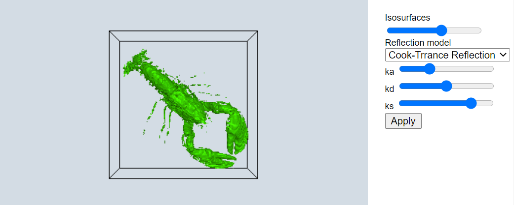
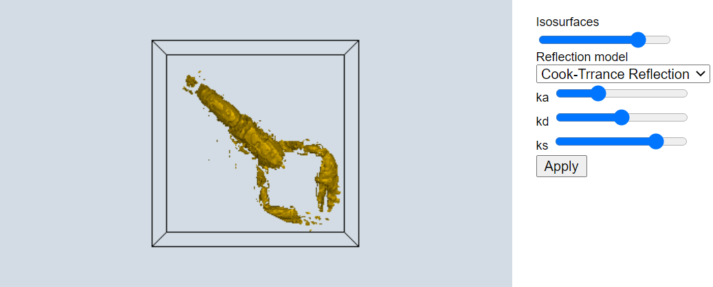
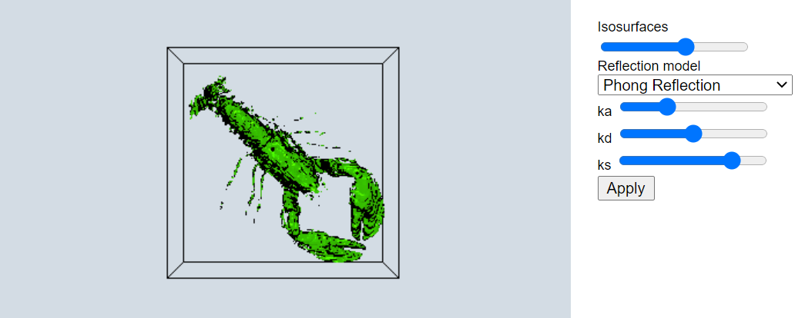
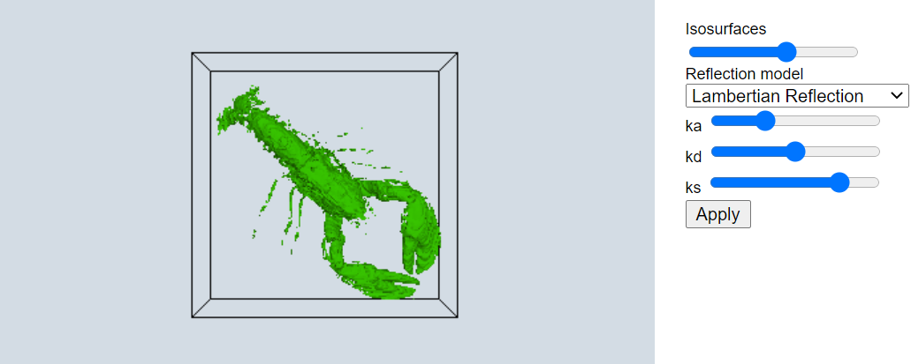
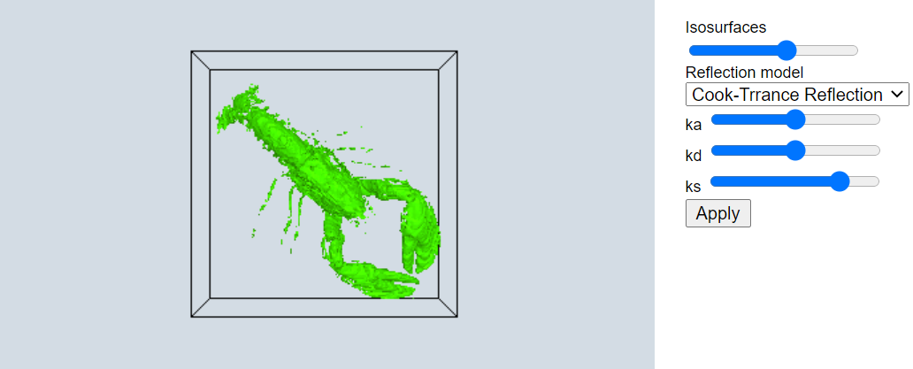
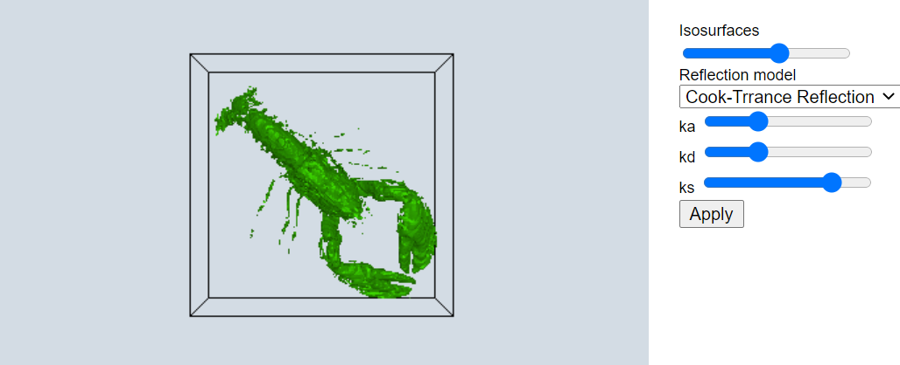
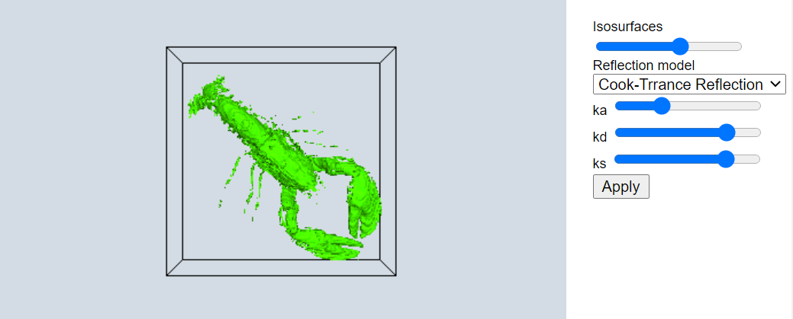
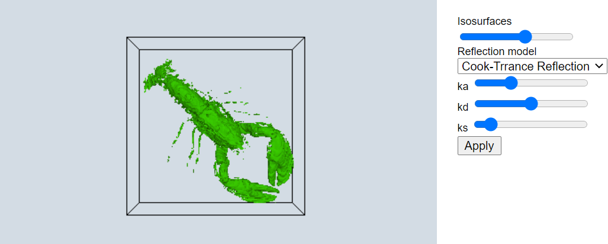
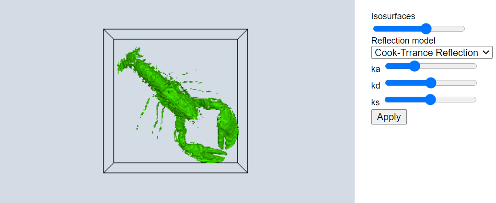

isosurfacesの値に対応した色で表現されていることが確認できた。 このLobsterの例では値が小さいと表現される領域が多く、大きくするに従って表現される領域が少なくなることが確認できた。
Reflection model : CookTorrance Reflection, ka : 0.3, kd : 0.5, ks : 0.8
 |
 |  |
| Isosurfaces = 71 | Isosurfaces = 150 | Isosurfaces = 201 |
reflection model の変化
reflection modelではモデルごとに光沢の具合が異なることが確認できた。 Phong reflectionでの光沢が一番強く、Lambertian reflectionでの光沢が小さいことが確認できた。
Isosurfaces : 150, ka : 0.3, kd : 0.5, ks : 0.8
|  |  |  |
|
| Cook-Trrance reflection | Phong reflection | Lambertian reflection | Binn-Phongreflection |
ka の変化
kaの値が大きくなると全体的に明るくなることが確認できた。
Isosurfaces : 150, Reflection model : CookTorrance Reflection, kd : 0.5, ks : 0.8
|  | ||
| ka = 0.3 | ka = 0.5 | ka = 0.8 |
kdの変化
kaの値によってその効果が異なるが、ka=0.3のときはkdが0.3、0.5で凸凹がみられる一方で、0.8だと凸凹が分かりにくくなっていた。
Isosurfaces : 150, Reflection model : CookTorrance Reflection, ka : 0.3, ks : 0.8
|  |  | |
| kd = 0.3 | kd = 0.5 | kd = 0.8 |
ksの変化
ksを大きくすると、光沢がつくようになった。 ただし、Lambertian reflectionはksを使わないので変化はなかった。
Isosurfaces : 150, Reflection model : CookTorrance Reflection, ka : 0.3, kd : 0.5
|  |  | |
| ks = 0.1 | ks = 0.5 | ks = 0.8 |